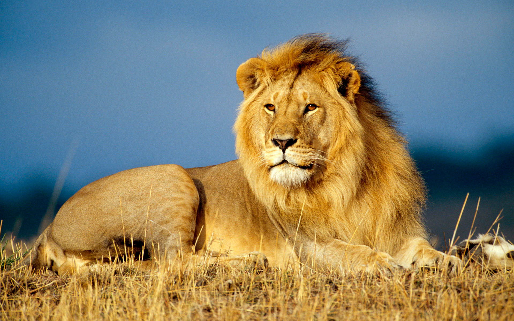

Elephants
Elephants help maintain forest and savanna ecosystems for other species and are integrally tied to rich biodiversity.

Dolphin
The dolphins' ecosystem helps keep the lives of other marine life and humans safe.

Lion
Lion the King of Jungle play a pivotal role in sustaining healthy ecosystems by maintaining balanced numbers of herbivores, such as zebras and wildebeests.